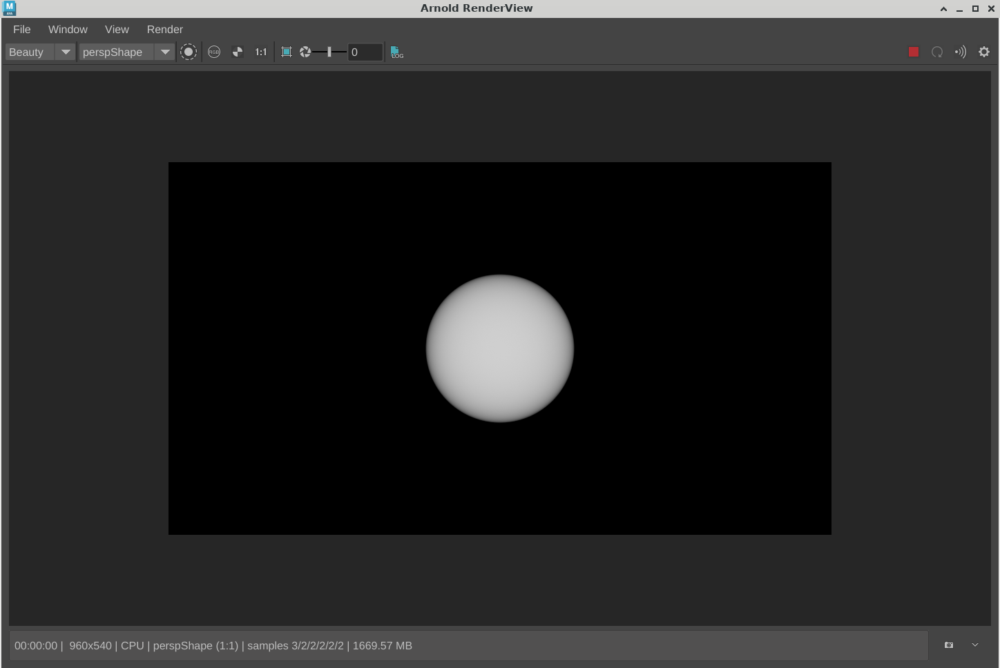

首先，我们将创建一个非常基本的 Maya 插件，由它定义一个自定义节点：
myPlugin.cpp
#include <maya/MFnPlugin.h>
#include "myNode.h"
MTypeId mySimpleNode::id(0x00070005);
MObject mySimpleNode::s_value;
void* mySimpleNode::creator()
{
return new mySimpleNode();
}
MStatus mySimpleNode::initialize()
{
MFnNumericAttribute nAttr;
s_value = nAttr.create("my_attribute", "ma", MFnNumericData::kFloat, 0.5f);
nAttr.setSoftMin(0);
nAttr.setSoftMax(1);
nAttr.setMin(0);
nAttr.setMax(10);
addAttribute(s_value);
return MS::kSuccess;
}
MStatus initializePlugin(MObject obj)
{
MStatus status;
MFnPlugin plugin(obj, "My Company", "1.0", "Any");
status = plugin.registerNode("mySimpleNode",
mySimpleNode::id,
mySimpleNode::creator,
mySimpleNode::initialize,
MPxNode::kLocatorNode);
if (!status) {
status.perror("registerNode");
return status;
}
return status;
}
MStatus uninitializePlugin(MObject obj)
{
MStatus status;
MFnPlugin plugin(obj);
status = plugin.deregisterNode(mySimpleNode::id);
if (!status) {
status.perror("deregisterNode");
return status;
}
return status;
}
然后对其进行编译。
Windows
打开 Visual Studio 命令提示符，然后执行以下命令：
首先，设置 MAYA_PATH 和 MTOA_PATH 环境变量（根据需要更改 Maya 和 MtoA 版本）：
set MTOA_PATH="C:\solidangle\mtoadeploy\20XX"
set MAYA_PATH="C:\Program Files\Autodesk\Maya20XX" cl /c myPlugin.cpp /EHsc /MD /DNT_PLUGIN /DREQUIRE_IOSTREAM /I%MAYA_PATH%\include
link /dll myPlugin.obj /LIBPATH:%MAYA_PATH%\lib OpenGl32.lib glu32.lib Foundation.lib OpenMaya.lib OpenMayaRender.lib OpenMayaUI.lib OpenMayaAnim.lib OpenMayaFX.lib /export:initializePlugin /export:uninitializePlugin /OUT:myPlugin.mllLinux/MacOS
设置这些环境变量，以便更轻松地设置编译时所针对的 Maya 和 MtoA 版本
export MTOA_PATH="/usr/autodesk/arnold/20XX"
export MAYA_PATH="/usr/autodesk/Maya20XX" g++ -o myPlugin.o -c -fvisibility=hidden -Wno-reorder \
-DBits64\_ -m64 -DUNIX -D_BOOL -DLINUX -DFUNCPROTO -D_GNU_SOURCE \
-DLINUX_64 -fPIC \
-fno-strict-aliasing -DREQUIRE\_IOSTREAM -O3 -Wall \
-Wno-multichar -Wno-comment -Wno-sign-compare -funsigned-char \
-pthread \
-std=c++11 \
-Wno-deprecated -Wno-reorder \
-fno-gnu-keywords \
-I. -I${MAYA_PATH}/include -I/usr/X11R6/include\
-lOpenMaya -lOpenMayaRender -lOpenMayaUI -lFoundation -lGL \
myPlugin.cpp
g++ -o myPlugin.so -fvisibility=hidden -Wno-reorder \
-DBits64_ -m64 -DUNIX -D_BOOL -DLINUX -DFUNCPROTO -D_GNU_SOURCE \
-DLINUX_64 -fPIC \
-fno-strict-aliasing -DREQUIRE_IOSTREAM -O3 -Wall \
-Wno-multichar -Wno-comment -Wno-sign-compare -funsigned-char \
-pthread \
-std=c++11 \
-Wno-deprecated -Wno-reorder \
-fno-gnu-keywords \
-Wl,-Bsymbolic -shared myPlugin.o \
-L${MAYA\_PATH}/lib -lOpenMaya -lOpenMayaRender -lOpenMayaUI -lFoundation -lGL
通过将生成的 myPlugin.mll/.so/.dylib 添加到 MAYA_PLUIGN_PATH 环境变量，在 Maya 中加载它，然后即可创建 mySimpleNode 节点实例。
在脚本编辑器中使用 MEL 键入以下内容：
loadPlugin("myPlugin");
createNode("mySimpleNode");此节点的转换器非常简单，但这次，我们将从 CDagTranslator（而非 CNodeTranslator）继承转换器，这样将可以使用 DAG 节点特定的方法，如导出变换矩阵。
test.h
#include "translators/DagTranslator.h"
class CTestTranslatorCmd
: public CDagTranslator
{
public:
AtNode* CreateArnoldNodes();
void Export(AtNode*);
static void* creator();
};然后，我们将定义导出 Arnold 球体的方法，从节点获取矩阵，然后将节点属性导出到球体半径。
test.cpp
#include "test.h"
#include <ai_msg.h>
#include <ai_nodes.h>
void CTestTranslatorCmd::Export(AtNode* node)
{
AiMsgInfo("[test extension] Exporting %s", GetMayaNodeName().asChar());
// Export the transform matrix
ExportMatrix(node);
AiNodeSetFlt(node, AtString("radius"), FindMayaPlug("my_attribute").asFloat());
}
AtNode* CTestTranslatorCmd::CreateArnoldNodes()
{
return AddArnoldNode("sphere");
}
void* CTestTranslatorCmd::creator()
{
return new CTestTranslatorCmd();
}我们使用以下方法加载扩展：
plugin1.cpp
#include "test.h"
#include "myPlugin.cpp"
#include "extension/Extension.h"
extern "C"
{
DLLEXPORT void initializeExtension(CExtension &plugin)
{
plugin.Requires ( "myPlugin" );
plugin.RegisterTranslator("mySimpleNode",
"",
CTestTranslatorCmd::creator);
}
DLLEXPORT void deinitializeExtension(CExtension &plugin)
{
}
}此外，我们也可以将这个自定义 Maya 节点放在扩展本身中，这样就不需要再加载插件。
首先，我们通过移除 initializePlugin 和 uninitializePlugin 方法来简化自定义 Maya 节点插件：
myNode.cpp
#include "myNode.h"
MTypeId mySimpleNode::id(0x00070006);
MObject mySimpleNode::s_value;
void* mySimpleNode::creator()
{
return new mySimpleNode();
}
MStatus mySimpleNode::initialize()
{
MFnNumericAttribute nAttr;
s_value = nAttr.create("my_attribute", "ma", MFnNumericData::kFloat, 0.5f);
nAttr.setSoftMin(0);
nAttr.setSoftMax(1);
nAttr.setMin(0);
nAttr.setMax(10);
addAttribute(s_value);
return MS::kSuccess;
}我们需要将声明移至单独的标头：
myNode.h
#include <maya/MPxLocatorNode.h>
#include <maya/MFnNumericAttribute.h>
#include <maya/MTypeId.h>
class mySimpleNode : public MPxLocatorNode
{
public:
mySimpleNode(){};
virtual ~mySimpleNode(){};
static void* creator();
static MStatus initialize();
static MTypeId id;
static MObject s_value;
};
我们不需要修改转换器，但是要在 initializeExtension 方法中做以下更改：
plugin2.cpp
#include "test.h"
#include "myNode.h"
#include "extension/Extension.h"
extern "C"
{
DLLEXPORT void initializeExtension(CExtension &plugin)
{
plugin.RegisterNode("mySimpleNode",
mySimpleNode::id,
mySimpleNode::creator,
mySimpleNode::initialize,
MPxNode::kLocatorNode);
plugin.RegisterTranslator("mySimpleNode",
"",
CTestTranslatorCmd::creator);
}
DLLEXPORT void deinitializeExtension(CExtension &plugin)
{
}
}现在，当使用 MtoA 加载扩展时，我们的自定义节点及其转换器将会正确注册。
渲染后，它将生成简单的球体基本体
自定义节点具有名为 my_attribute 的简单属性，该属性将控制球体的半径